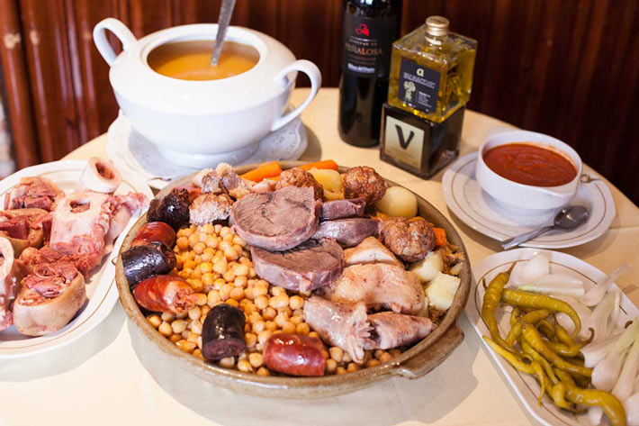
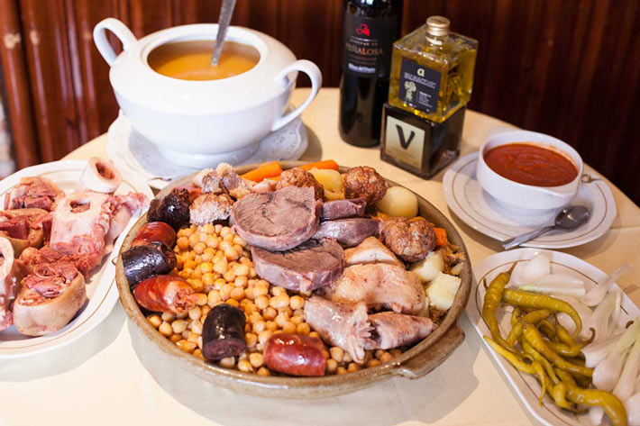
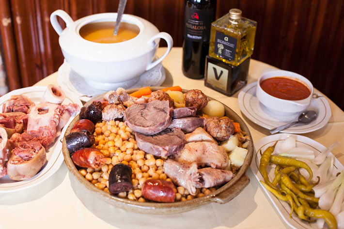

Donde el lujo se fusiona con la historia,
a pasos de la Puerta de Alcalá.
Nuestra historia se remonta hasta hace más de un siglo, nos encontramos en el corazón del Madrid castizo,
un barrio lleno de historia y tradición. Allí, en el año 1903, un visionario emprendedor decidió establecer un modesto hostal
que serviría como punto de encuentro para viajeros y lugareños por igual.
Este hostal, que luego se convertiría en el Hotel Royal Madrid, comenzó como un refugio acogedor para aquellos que buscaban
experimentar la auténtica esencia de la capital española. Fundado en el Madrid más tradicional, pronto se ganó la reputación
de ofrecer hospitalidad cálida y genuina, reflejando la riqueza cultural de la ciudad. Con el tiempo, el hostal evolucionó y creció, convirtiéndose en uno de los primeros hoteles en la bulliciosa ciudad de Madrid.
A medida que la ciudad se expandía, el Hotel Royal Madrid también se transformó, conservando sus raíces castizas mientras
abrazaba la modernidad.
Una de las joyas del hotel es su bodega en Chinchón, donde se produce un vino exclusivo de cosecha
propia: el "Valdeliceda 2020". Este vino, con su aroma y sabor inconfundibles, se ha convertido en un símbolo
de la excelencia del Hotel Royal Madrid.En la década de 1960, el hotel saltó a la fama gracias a la aclamada cocina
madrileña que ofrecía. Los turistas e inmigrantes locales reconocieron la maestría en la preparación de platos tradicionales,
especialmente el cocido madrileño y los callos a la madrileña. Estas delicias culinarias se volvieron emblemáticas,
atrayendo a visitantes de todas partes.

En 2004, el Hotel Royal Madrid experimentó una transformación significativa
con una remodelación que lo llevó a la modernidad sin perder su esencia castiza. Las instalaciones se actualizaron para
ofrecer comodidades contemporáneas, pero la calidez y autenticidad que caracterizaban al hotel desde sus inicios
se mantuvieron intactas. Finalmente, en el año 2023, el Hotel Royal Madrid alcanzó la cima de su reconocimiento al
recibir dos prestigiosos premios a nivel mundial: los "World Travel Awards 2023" y los "Stevie Awards 2023".
Estos reconocimientos no solo honran la trayectoria y el servicio excepcional del hotel, sino que consolidan su posición
como uno de los hoteles más prestigiosos de Madrid. Hoy en día, el Hotel Royal Madrid sigue siendo un faro de hospitalidad,
fusionando la tradición con la modernidad para brindar a sus huéspedes una experiencia única e inolvidable en el corazón
de la vibrante capital española. ¡Bienvenidos a una estancia llena de historia, sabor y elegancia en el Hotel Royal Madrid!
 
